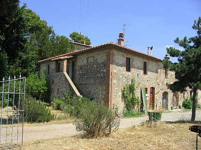

Quercegrossa (Ricordi e memorie)
CAPITOLO I - LUOGHI E PODERI
(ARGINANO)
Indice poderi
Vai all'Indice dei Capitoli
ARGINANO
Arginano, o più esattamente Larginano, antica proprietà fin dal 1106 delle Monache di Montecelso, divenute poi della Madonna, dovrebbe essere una fondazione di epoca romana se non anteriore. Vicinissimo a Quercegrossa, situato a destra lungo la strada principale in direzione del paese in Comune di Castelnuovo B.ga, costituiva una fattoria alla quale facevano capo i poderi di Gaggiola e Viareggio, collegati con una strada padronale. Dai primi dell’Ottocento la fattoria comprendeva anche il podere del Casalino.
Vista panoramica della fattoria dell'Arginano
L’ente religioso suddetto ne conservò la proprietà per sette secoli. Residenti a Monte Cellese presso Fontebecci, le monache camaldolesi di S. Maria, dette successivamente della Madonna o Trafisse, ricevettero in dono queste terre costruendovi una chiesa dedicata a S. Sebastiano che ebbe nel passato e per un breve periodo anche funzioni di parrocchia. Nel 1537 trasferite in S. Marco in quella che è la via delle Sperandie, divennero "Le Trafisse" e cedettero il convento di Montecelso ai monaci Camaldolesi. Nel 1808, a seguito della soppressione dei conventi e della confisca delle loro proprietà anche la fattoria di Larginano, come tutti gli altri beni, divenne proprietà demaniale e venduta verso il 1810 a privati. Acquistata da Bernardino Bruschi, che la tenne cinque/sei anni, per poi passarla al genero Galgano Diddi che ne ha la proprietà già nel 1819. E’ formata dalla villa padronale, dalla casa colonica, dalla cappella e da una grande capanna con parata e castri, separata dalla costruzione principale. Nel 1825 la casa patronale copriva una superficie di 648 bq., circa 222 mq.; la casa colonica di 707 bq. (242 mq.), la cappella di 160 bq. (circa 54 mq.) e la capanna di 280 bq. La fabbrica era strutturata su pianta rettangolare e si accedeva al piano superiore attraverso un chiostro interno che raccoglieva diversi servizi: la stalla, il pollaio, il forno, il pozzo e un passaggio di comodo collegava alla villa. Un arco a tutto sesto immetteva nel chiostro ed era in sintonia con quello della loggia. Lo stalletto delle pecore nella capanna e i castri dietro di essa. La cappella di S. Sebastiano occupava un solo ambiente nella parte di levante. La villa, residenza di campagna, è stata certamente costruita dal signor Bruschi nel secondo decennio dell’Ottocento, infatti, nel 1818 è ricordata per la prima volta come "villa disabitata" e si intende residenza padronale estiva. Sotto il Diddi la cappella viene restaurata e riaperta al culto. Il 2 ottobre 1850 la proprietà passa a Ricci Mario di Giuseppe, il quale nel 1868 vi esegue dei lavori di ampliamento e restauro. Viene aggiunta ad Ovest quella che sarà la futura abitazione del secondo contadino. Anche la villa deve aver subito lavori di restauro della facciata. Ancora un nuovo proprietario della fattoria nel 1882, ed è l’avvocato Temistocle Purghi che acquista con atto del 20 ottobre. L’avvocato Purghi di Siena terrà Larginano e gli altri poderi per trentasei anni dopodiché entreranno proprietarie le figlie di Emilio Cateni il 30 agosto 1918. Esse ne manterranno il possesso, sotto la gestione dei rispettivi mariti, per alcuni anni fino a quando passeranno agli eredi. Ereditarono in quel 1918 Cesira Cateni, coniugata Mosca, e Romilda Cateni, coniugata Bindi, proprietarie anche del Castellare. Due anni dopo si venne ad una suddivisione dei beni di famiglia e il 2 ottobre 1920 la fattoria di Larginano passa a Cesira, la moglie del Mosca, il quale si insedierà nella villa e vi dimorerà fino agli anni Cinquanta anche se la proprietà nel 1934 venne ceduta a Romilda Cateni che unì così sotto un’unica amministrazione il Castellare e Larginano mentre la sorella Cesira fungeva da fattoressa. Alla morte del vecchio Bindi i figli Augusto ed Emilio divennero in pratica i padroni per divenirne proprietari effettivi alla morte della mamma Romilda molti anni dopo.

Per secoli sede di un unico podere, l’Arginano venne raddoppiato verso il 1922/23 con la costituzione di un secondo podere il cui contadino prese dimora nel lato dell’edificio che guarda la strada principale (foto a fianco). Nella fattoria dell’Arginano fu attivo fino agli anni Cinquanta del Novecento un frantoio a due macine e a forza animale. Un unico forno nel chiostro interno serviva i due coloni. Il primo podere, vista la grande estensione, ospitò sempre famiglie numerose che già dai primi elenchi del 1592 la famiglia Granai si compone di 12 elementi più un garzone. I Granai occuparono Larginano dal 1582 al 1635, ma prima di loro presenti dal 1537 la famiglia Porcelli con Piero, Luca e Santi di Giovanni. Ai Granai seguirono i Dominici (1575), i Viti e i Banchi e poi tante famiglie e tra le più importanti segnalo i Fineschi, dal 1692 al 1730 i Marzi dal 1740 al 1808, i Manganelli prima di trasferirsi a Pietralta, i Mariotti dal 1840 al 1860, i Bogi dal 1874 al 1921 e ultimi i Buti. Nel secondo podere si ricordano i Michelangioli, i Ciatti e infine i Nencioni che chiusero la stagione della mezzadria. I campi del secondo podere spaziavano in comune di Monteriggioni dalla casa del Castagnini-Papi fino all’Arginanino e la zona fino alla Val di Lama. Poi le terre in Castelnuovo, dietro il Leccino Nuovo compresa la piaggia verso la casa del Mosca. La strada del boschetto faceva da confine con l’altro podere del Buti. Ottimo podere, ma con poco vino. I Nencioni avevano 2 paia di vacche e un paio di bovi. Nell’altro podere i Buti tenevano una stalla con 2 paia di bovi, un paio di vacche e 3/4 vitelli. Avevano 12 pecore e due scrofe. Ammazzavano un maiale all’anno.
Vista panoramica dell'Arginano: lato esposto a est con la cappella e le macine del frantoio
Arginano: ingresso al podere e arco della loggetta
Arginano: capanna e castri
Inizio del viale che portava a Gaggiola
Arginano: veduta della villa: facciata
Arginano: veduta della villa e del nuovo podere
Capitolo successivo "Bellavista"
Inizio pagina
Vai all'Indice dei Capitoli
|